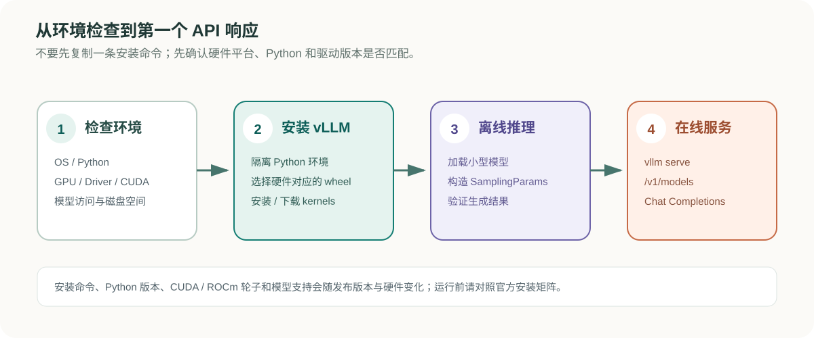

第 06 章 · 安装、模型接入与生成控制
快速上手：安装、离线推理与 API 服务
本章带你走完第一次运行 vLLM 的完整路径：确认环境、安装依赖、在 Python 程序中批量生成，再启动一个兼容 OpenAI API 的模型服务。
“安装 vLLM”不是一条适用于所有电脑的 pip 命令。vLLM 包含与 GPU、驱动、PyTorch 和加速 kernel 相关的二进制组件。正确的第一步，是确认你使用的操作系统和加速器，再按照官方安装矩阵选择对应环境。
读完这一章，你应该能够
- 检查操作系统、Python、GPU 驱动和模型访问条件。
- 创建隔离环境，并按硬件平台安装 vLLM。
- 使用 Python API 完成一个最小批量推理程序。
- 启动在线服务，并通过 HTTP 或 OpenAI SDK 发送请求。

6.1 安装前先检查什么？
至少确认以下信息：
# 操作系统
uname -a
# Python 版本
python3 --version
# NVIDIA GPU 和驱动（NVIDIA 环境）
nvidia-smi
# 磁盘空间
df -h还要确认你打算使用哪类设备：NVIDIA CUDA、AMD ROCm、Intel XPU、CPU、TPU，或 Apple Silicon。不同平台的安装包、依赖和支持的模型并不相同。不要把 NVIDIA CUDA 的安装命令直接复制到 ROCm 或其他平台。
平台说明：截至 2026-11-20，官方 Quickstart 的主要路径列出 Linux 与 Python 3.11–3.14；但不同加速器的 wheel、驱动和依赖组合可能进一步收窄可用范围。macOS Apple Silicon、AMD、Intel、TPU 等路径有各自的安装说明。请在实际安装时打开官方文档，按硬件选项核对要求。
另外，模型权重通常需要从 Hugging Face 或本地模型目录加载。首次运行前确认网络、访问权限、磁盘空间和模型许可，避免把模型下载失败误判为 vLLM 安装失败。
6.2 创建隔离环境并安装
对官方 Quickstart 中的常见 NVIDIA CUDA 路径，可以使用 uv 管理隔离环境。下面命令是当前官方文档提供的安装路径示例；如果你的平台或驱动版本不同，应先查看对应硬件安装页。
# 1. 创建虚拟环境
uv venv --python 3.12 --seed
# 2. 激活环境
source .venv/bin/activate
# 3. 安装 vLLM，并让 uv 选择匹配的 PyTorch backend
uv pip install vllm --torch-backend=auto
# 4. 按当前 Quickstart 预下载预编译 kernels
vllm download-kernels
# 5. 检查命令是否可用
vllm --help为什么建议使用隔离环境？vLLM 的 C++ / CUDA 扩展与 PyTorch、CUDA 或 ROCm 构建配置存在兼容关系。把它安装在一个全新的环境里，通常比复用已有的、装满不同版本深度学习依赖的环境更容易排查。
vllm download-kernels 用于预先获取部分预编译 kernel，减少首次启动时下载或编译的等待。它不会下载模型权重，也不能代替硬件兼容性检查。
6.3 第一个离线推理程序
离线推理指的是在 Python 程序中直接调用 vLLM 的推理接口，而不是先启动 HTTP 服务。下面使用官方 Quickstart 中的小型指令模型作为示例。首次运行时，模型权重可能需要下载到本地缓存。
from vllm import LLM, SamplingParams
# 1. 加载模型
llm = LLM(model="Qwen/Qwen2.5-1.5B-Instruct")
# 2. 设置生成参数
sampling = SamplingParams(
temperature=0.7,
top_p=0.9,
max_tokens=128,
)
# 3. 准备多个请求
prompts = [
"用一句话解释什么是 KV Cache。",
"用三点总结 PagedAttention 的核心思想。",
]
# 4. 批量生成
outputs = llm.generate(prompts, sampling)
# 5. 读取结果
for output in outputs:
print("Prompt:", output.prompt)
print("Generated:", output.outputs[0].text)
print("---")这个示例展示的是最小调用路径，不是生产配置。模型能否加载取决于权重大小、GPU 显存、dtype、模型架构和 vLLM 当前版本的支持情况。若显存不足，可以先换更小的模型，或按官方文档选择适合的量化模型和并行配置。
6.4 启动 OpenAI 兼容 API 服务
如果多个应用都需要调用同一个模型，可以让 vLLM 作为服务进程运行。它提供兼容 OpenAI API 协议的接口，客户端可以通过 HTTP 或 OpenAI Python SDK 访问。
# 建议在对外开放的服务中设置 API Key
export VLLM_API_KEY="replace-with-a-long-random-secret"
# 启动服务
vllm serve Qwen/Qwen2.5-1.5B-Instruct \
--host 0.0.0.0 \
--port 8000 \
--api-key "$VLLM_API_KEY"先检查服务暴露的模型列表：
curl http://localhost:8000/v1/models \
-H "Authorization: Bearer $VLLM_API_KEY"再发送一次 Chat Completion 请求：
curl http://localhost:8000/v1/chat/completions \
-H "Content-Type: application/json" \
-H "Authorization: Bearer $VLLM_API_KEY" \
-d '{
"model": "Qwen/Qwen2.5-1.5B-Instruct",
"messages": [
{"role": "user", "content": "用一句话解释 Prefill 和 Decode 的区别。"}
],
"max_tokens": 128
}'也可以使用 OpenAI Python SDK，只需要把 base_url 指向本地 vLLM 服务：
from openai import OpenAI
import os
client = OpenAI(
base_url="http://localhost:8000/v1",
api_key=os.environ["VLLM_API_KEY"],
)
response = client.chat.completions.create(
model="Qwen/Qwen2.5-1.5B-Instruct",
messages=[
{"role": "user", "content": "你好，请介绍一下自己。"}
],
)
print(response.choices[0].message.content)安全提醒：本地开发和公网服务的风险不同。不要把没有鉴权的服务直接暴露到公网；生产环境还需要 TLS、反向代理、速率限制、日志脱敏和网络访问控制，第 15、18 章会进一步讨论。
6.5 验证与常见问题
| 现象 | 优先检查 | 下一步 |
|---|---|---|
| 安装时 wheel / CUDA 依赖不匹配 | Python、驱动、PyTorch backend 和硬件平台 | 重新对照官方 GPU 安装矩阵，使用干净环境 |
| 模型下载失败 | 网络、模型访问许可、token 和磁盘空间 | 先验证模型仓库访问，再尝试本地模型路径 |
| 模型加载 OOM | 权重大小、dtype、GPU 可用显存和上下文配置 | 先使用更小模型，逐项检查缓存和并行配置 |
| Chat API 返回模板相关错误 | 模型 tokenizer 是否提供适用的 chat template | 查看模型说明，按官方文档配置模板 |
| API 无法连接 | 服务进程、监听地址、端口、防火墙和鉴权头 | 先请求 /v1/models，再检查服务日志 |
查询命令帮助时，优先让当前安装版本告诉你它支持什么：
vllm --help
vllm serve --help
vllm serve --help=all6.6 为什么安装说明必须跟版本走？
vLLM 快速演进，支持的 Python 版本、CUDA / ROCm wheel、GPU 架构、预编译 kernel 和模型列表都会变化。网上旧教程可能仍然写着旧的 Python 范围、旧的环境变量或已经变更的 CLI 参数。
因此，这一章只把官方 Quickstart 中的命令作为一个可核验的安装示例，而不把它包装成永久不变的通用命令。开始一个新项目时，建议记录 vLLM 版本、Python 版本、驱动版本、GPU 型号、模型 ID 和启动参数，后续排障和复现实验才有依据。
下一章会深入模型加载与配置，解释模型格式、量化和显存参数分别影响什么。
参考资料
- vLLM, Quickstart，离线推理、在线 Serving 和当前安装流程。
- vLLM, GPU Installation Guide，按 NVIDIA、AMD、Intel 和 Apple Silicon 等平台选择安装方式。
- vLLM, CLI Guide，查看当前命令和参数。
命令和示例按 2026-11-20 可见的官方 Quickstart 编写；不同硬件平台和后续版本请以对应安装页为准。